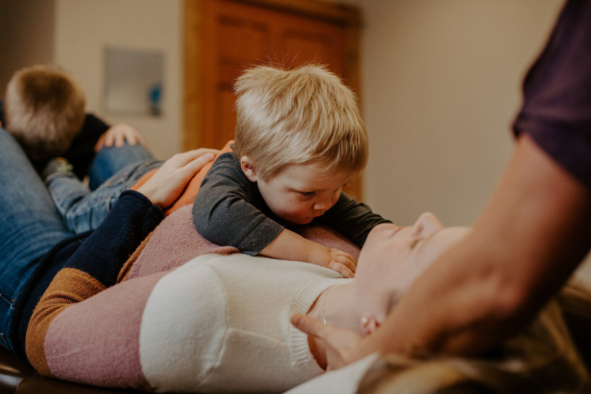

Gainsborough Family Chiropractor helps you restore movement, relieve pain, and reclaim your quality of life through compassionate, evidence-based chiropractic care for the whole family.
Book a ConsultationWe make it simple for patients to understand how we can help by presenting our treatments, sessions, and care approaches in a warm, organised manner.
Work with our experienced chiropractors who understand your body's unique needs and guide you through targeted spinal adjustments for lasting relief.
Access guided rehabilitation programmes designed to correct posture, improve mobility, and build the muscular support your spine needs.

Monitor your progress and maintain spinal health with our family-centred care plans, designed for every stage of life, from children to seniors.
Gainsborough Family Chiropractor promotes proactive care, helping you understand the root causes of pain, restore alignment, and build resilience before symptoms worsen.
Dr. Sarah Gainsborough is a registered chiropractor and family wellness advocate who founded Gainsborough Family Chiropractor to make high-quality spinal care accessible and approachable for everyone in the community.
Her professional journey began in sports rehabilitation, where she spent over a decade working with athletes and families to restore movement and prevent injury. After witnessing the limitations of reactive-only approaches, she built a practice centred on personalised, holistic spinal health.
Drawing from evidence-based chiropractic techniques, postural rehabilitation, and lifestyle coaching, Dr. Gainsborough's approach helps patients understand the root causes of their pain, build resilience, and reclaim balance in daily life.
More about our practiceTrusted by over 3,000 patients and families to deliver accessible, personalised, and evidence-based chiropractic care for every stage of life.
Targeted spinal adjustments designed to restore proper alignment, reduce nerve interference, and relieve chronic or acute back and neck pain.
Learn more →Restore comfort and function with targeted pain management techniques, soft tissue therapy, and recovery plans that support a pain-free daily life.
Learn more →Guided posture correction programmes and self-care tools that help you manage the effects of desk work, stress, and everyday physical strain.
Learn more →Personalised care plans for the whole family, from infants and children to seniors, building long-term spinal health and resilience at every age.
Learn more →Real stories from patients and families who found relief, mobility, and lasting wellness through Gainsborough Family Chiropractor.
Chiropractic care focuses on diagnosing and treating musculoskeletal disorders, particularly those related to the spine. It goes beyond symptom management to address the root causes of pain, stiffness, and reduced mobility, helping you heal from the inside out through manual adjustments and lifestyle guidance.
We combine evidence-based chiropractic adjustments with personalised rehabilitation and lifestyle coaching. Unlike clinics that offer one-size-fits-all treatments, we take time to understand your unique history, goals, and lifestyle to create a care plan that truly works for you.
Chiropractic care is not routinely available on the NHS, but many private health insurance plans do cover chiropractic treatment. We recommend checking with your insurer. We also offer flexible self-pay options and payment plans to ensure care is accessible for all patients.
We support patients dealing with back pain, neck pain, headaches, sciatica, sports injuries, postural problems, and general musculoskeletal discomfort. We also offer preventive care and wellness programmes for the whole family, including children and seniors.
Absolutely. Chiropractic care is safe and beneficial for patients of all ages when performed by a qualified practitioner. We use gentle, age-appropriate techniques tailored specifically for children, pregnant women, and older adults to ensure comfort and safety at every stage of life.
Your first visit includes a thorough health history review, postural assessment, and physical examination. We will discuss your goals and concerns before creating a personalised care plan. Most patients receive their first adjustment during this initial consultation.
No referral is needed. You can book directly with us online or by phone. We welcome self-referrals and are happy to work alongside your GP or other healthcare providers to ensure coordinated, comprehensive care.
Explore expert insights, posture tips, and spinal health guides to support your daily wellness journey.
Discover how spinal alignment influences your nervous system, energy levels, and overall physical wellbeing.
Simple routines that reduce tension, improve posture, and protect your spine from the effects of modern desk life.
Learn why proactive spinal care is more than pain relief. It is a foundation for lifelong health and mobility.
Personalised chiropractic care, expert guidance, and tools designed to help you feel your best, every single day.